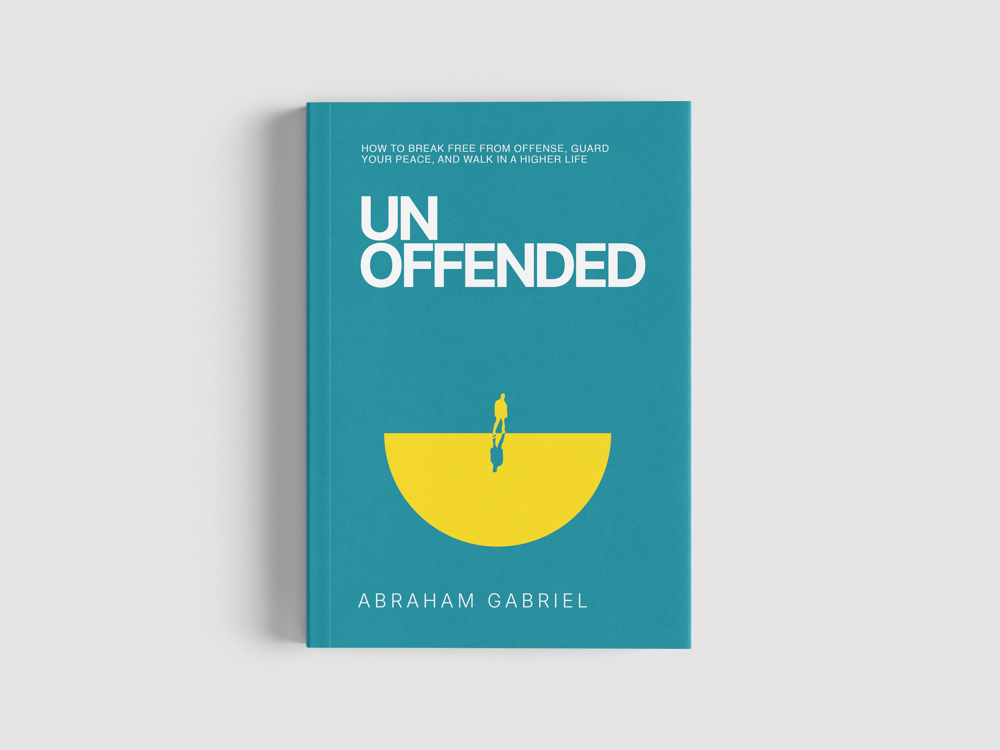

Recognize the Trap
See how offense begins, why Scripture presents it as skandalon — the trigger of a trap — and how unresolved hurt can quietly reshape identity, reactions and relationships.
UNOFFENDED is an invitation to break free from bitterness, guard your peace, and learn to respond to hurt, betrayal, disappointment and conflict from the higher life of Christ.
If you live long enough, serve faithfully enough, and love deeply enough, you will eventually be hurt. Families are wounded by misunderstanding. Friendships are strained by betrayal. Churches and communities are not immune to rejection, disappointment and unmet expectations.
JESUS WARNED US PLAINLY THAT OFFENSES WOULD COME.
The wound may be real. The injustice may be undeniable. But what happens next matters. What begins as something done to us can quietly become something living within us — shaping our identity, restricting our joy, distorting our relationships and keeping us trapped long after the original moment has passed.
A MIRROR AND A CALL TO RELATIONAL RESPONSIBILITY.
I once believed I was strong enough to handle offense and that I could not be overcome by it. What I did not realise was that this confidence rested more on self-effort than grace. I had grown up watching my parents walk through deeply trying and difficult seasons without allowing disappointment to turn their hearts against God or people. Their example stayed with me, but I had not yet learned that I could not reproduce that kind of life in the strength of the flesh.
THEN LIFE PROVED OTHERWISE.
Through my own seasons of hurt across relationships, ministry, leadership, community, and even the workplace, God began to expose the subtle ways offense takes root. I also began to see the same pattern across the Body of Christ: gifted people losing joy, relationships fracturing, voices growing silent, and assignments stalling because wounds were nursed rather than healed.
UNOFFENDED grew out of that wrestling. It is not a call to deny pain or pretend that wrong did not happen. It is an invitation to surrender the right to remain offended, receive the grace to heal, and learn the most excellent way, the higher way of Christ.
It asks us not only to examine the wounds others have inflicted on us, but also to examine our own hearts, words, and actions. Living UNOFFENDED means receiving grace for the wounds we carry while developing the humility and self-awareness not to become a needless source of offense to others.

In a world increasingly defined by outrage, division and wounded relationships, UNOFFENDED confronts one of the most underestimated spiritual traps of our generation: the quiet, corrosive power of retained offense.
Drawing on the lives of Joseph, David, Ananias, Abraham, John the Baptist and Jesus Himself, the book walks readers through the anatomy of offense — how it takes root, how it distorts identity, how it can masquerade as righteousness, and how it can be decisively overcome through truth, grace, forgiveness, wisdom and love.
Every chapter is anchored in Scripture, illuminated by real-life stories and closed with practical tools for response:
See how offense begins, why Scripture presents it as skandalon — the trigger of a trap — and how unresolved hurt can quietly reshape identity, reactions and relationships.
Learn how to leave the inner prison of betrayal, stop allowing wounds to define the future, and trust the sovereign God who can work even painful chapters toward redemptive purpose.
Navigate betrayal from peers, leaders, spiritual authority and even enemies without becoming retaliatory, vindictive or consumed by the need to defend yourself.
Examine your own heart, words, and actions. Learn to recognize where you may have caused offense, take responsibility where necessary, and develop the humility to repent, apologize, and make amends.
Understand forgiveness, trust, boundaries, truth-telling, and reconciliation — and learn how to pursue peace without confusing love with passivity or naivety.
Guard your ear gates, refuse inherited and second-hand offenses, resist the culture of outrage, and recover the redemptive love that refuses to leave people behind.
Because when pain remains unresolved, you can keep rehearsing it until it begins to shape how you see yourself, others, and even God. Time may pass, but offense can keep the wound alive.
Your freedom cannot depend on their apology, acknowledgment, or change. You can release the debt to God and refuse to let what they did continue to govern your heart.
You can forgive freely without pretending trust has been restored. Trust is earned through demonstrated change, reconciliation requires mutual willingness, and boundaries help you guard your heart without hardening it.
You can acknowledge the wrong without becoming what wounded you. Keep your hands clean, establish necessary boundaries, and entrust your vindication to God rather than throwing the spear back.
Bring your questions honestly to God rather than withdrawing from Him. Surrender your expectations, remember His track record, and trust His sovereignty beyond what you presently understand.
Guard your ear gates. Do not inherit someone else’s enemies from a one-sided story. Seek truth, exercise restraint, and refuse to carry an offense that was never yours.
Speak truth in love. Examine your own heart, refuse blame-shifting and defensiveness, and confront what is wrong without allowing hatred or vengeance to take root in you.
UNOFFENDED speaks to the believer in the middle of a fresh wound and to the person carrying something that happened years ago.
You have been hurt, betrayed, misunderstood, rejected or treated unfairly — and you do not want what happened to you to determine what happens within you.
You are struggling to forgive, even though you know bitterness is costing you peace.
You have experienced church hurt, leadership betrayal or disappointment with someone you once trusted deeply.
You want to understand how to set boundaries without hardening your heart or using “protecting my peace” as a substitute for healing.
You have found yourself carrying an offense that did not begin with you — through family, friendship, gossip, community or online outrage.
You lead, mentor, counsel or disciple others and need a biblical, practical framework for helping people navigate relational wounds.
Heart Audits, Action Points and Prayers help move every chapter from insight to response.
Discussion-ready themes make the book suitable for guided group conversations.
A practical resource for navigating relational conflict, church hurt, betrayal and forgiveness.
For anyone serving people and facing the inevitable complexity of human relationships.
Choose the order route that applies to you. The book will be available in paperback and digital formats.
Offenses will come. But through the grace of God, you can refuse the trap, guard your heart, recover your peace and walk in the life you were designed for.
CHOOSE FREEDOM. GUARD YOUR PEACE. WALK IN A HIGHER LIFE.